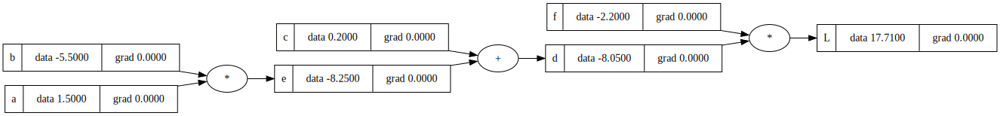
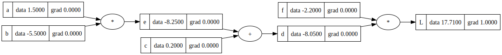
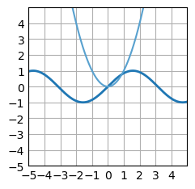
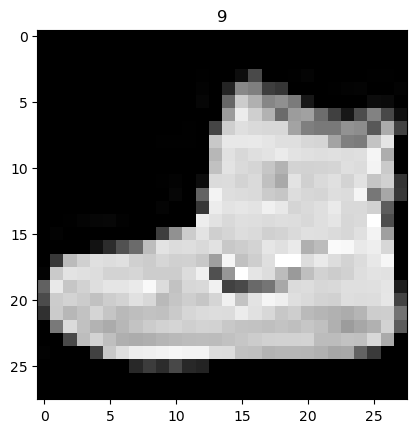
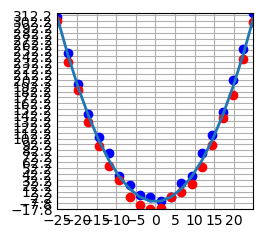
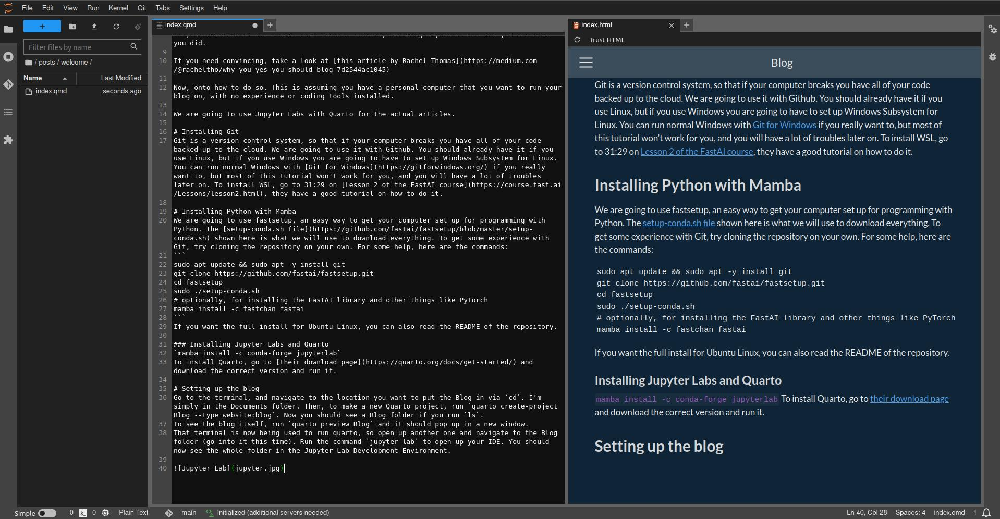

Blog
About Jax Bulbrook
My Posts
Categories
All
(19)
100-papers
(14)
project
(4)
tutorial
(1)

MakeMore from Scratch
project
Makemore is a model that will make… more, of what you are inputing. This is following a tutorial from Andrej Karpathy.
Aug 1, 2023
Jax Bulbrook
Day 13 - PyTorch: An Imperative Style, High-Performance Deep Learning Library
100-papers
I had an interest in this paper since making the autograd engine from micrograd, since I want to see how they did it. Pytorch was made in C++ to be faster, and is made as an…
Jul 30, 2023
Jax Bulbrook
Day 12 - RWKV: Reinventing RNNs for the Transformer Era
100-papers
This paper was a good but complex read. It is about Receptance Weighted Key Value models, which are an alternative to Transformers that combine the ideas from both…
Jul 29, 2023
Jax Bulbrook
Day 11 - Recurrent Neural Networks (RNNs): A gentle Introduction and Overview
100-papers
This paper explained several things conceptually, from RNNs to Transformers. This was like the matrix calculus paper, an explanation and not anything new. There was a lot of…
Jul 28, 2023
Jax Bulbrook
Day 10 - Character-Level Language Modeling with Deeper Self-Attention
100-papers
This was about a character-level model Transformer, replacing the state of the art for character-level modelling compared to RNNs. It was unfortunately still lacking when…
Jul 27, 2023
Jax Bulbrook
Day 9 - Language Models are Few-Shot Learners
100-papers
This is the GPT-3 paper, an expansion of Day 8’s paper on GPT-2. It is what happens when you take parameters to the extreme. At the largest model, they had 175 billion…
Jul 26, 2023
Jax Bulbrook
Day 8 - Language Models are Unsupervised Multitask Learners
100-papers
This is the GPT-2 paper, an expansion of Day 7’s paper on GPT-1. It is a proof of concept demonstrating a model with an order of magnitude more parameters than the original…
Jul 25, 2023
Jax Bulbrook

MicroGrad from Scratch with Andrej Karpathy’s tutorial
project
I want to learn how Transformers work in depth, but I need a bit of background first. I am going to do all of the tutorials on Andrej Karpathy’s channel, starting with this micrograd from…
Jul 25, 2023
Jax Bulbrook
Day 7 - Improving Language Understanding by Generative Pre-Training
100-papers
This is the GPT-1 paper, possibly one of the most influential papers of all time. This presented what would later change the world as ChatGPT! It is a Transformer that uses…
Jul 24, 2023
Jax Bulbrook
Day 6 - DeepFace: Closing the Gap to Human-Level Performance in Face Verification
100-papers
This paper presents Facebook’s state of the art at the time face classifier called DeepFace. It replaced traditional methods that both had less accuracy AND required more…
Jul 23, 2023
Jax Bulbrook
Day 5 - The Matrix Calculus You Need For Deep Learning
100-papers
This paper is meant to educate people about multi-variable calculus and deep learning. Overall the most useful paper I’ve read so far. It told me about the Jacobian matrix…
Jul 22, 2023
Jax Bulbrook
Day 4 - A ConvNet for the 2020s
100-papers
This paper is an attempt to combine the various state of the art results from various convnets over the years into one model. All have been done before, but never in the…
Jul 21, 2023
Jax Bulbrook
Day 3 - Visualizing and Understanding Convolutional Networks
100-papers
This paper presents a deconvnet layer to deconstruct the models predictions back into the original image, with the ability to see features. They attach a deconvnet to each…
Jul 20, 2023
Jax Bulbrook
Day 2 - Attention is all you need
100-papers
This paper was groundbreaking, introducing the Transformer model, which replaced the Recurrent Neural Network and Convolutional Neural Network.
Jul 19, 2023
Jax Bulbrook

Math function classifier with Pytorch
project
The goal of this project is to be able to type in a math function and…
Jul 18, 2023
Jax Bulbrook

Day 1 - ImageNet Classification with Deep Convolutional Neural Networks
100-papers
They trained a convolutional neural network to identify ImageNet with state of the art results. The model consists of 5 convolutional layers, and then 3 feed-forward…
Jul 18, 2023
Jax Bulbrook

Using a neural network to predict poisonous fruit
project
I recently watched an interesting video by Sebastian Lague where he classifies random data using a neural network from scratch. I’m not quite good enough at calculus to do all of that, but I think I can pull it off with PyTorch. I…
Jul 18, 2023
Jax Bulbrook
100 Papers in 100 Days
100-papers
This is a challenge I am setting in order to keep up with the latest research. New models and papers are coming out multiple times per day, and I feel like I have been…
Jul 17, 2023
Jax Bulbrook

Getting started with a Quarto blog
tutorial
The best way to stay motivated during your journey into learning to code (or anything really) is to tell people about it. Keep yourself accountable. Editing youtube videos…
Jul 17, 2023
Jax Bulbrook
No matching items